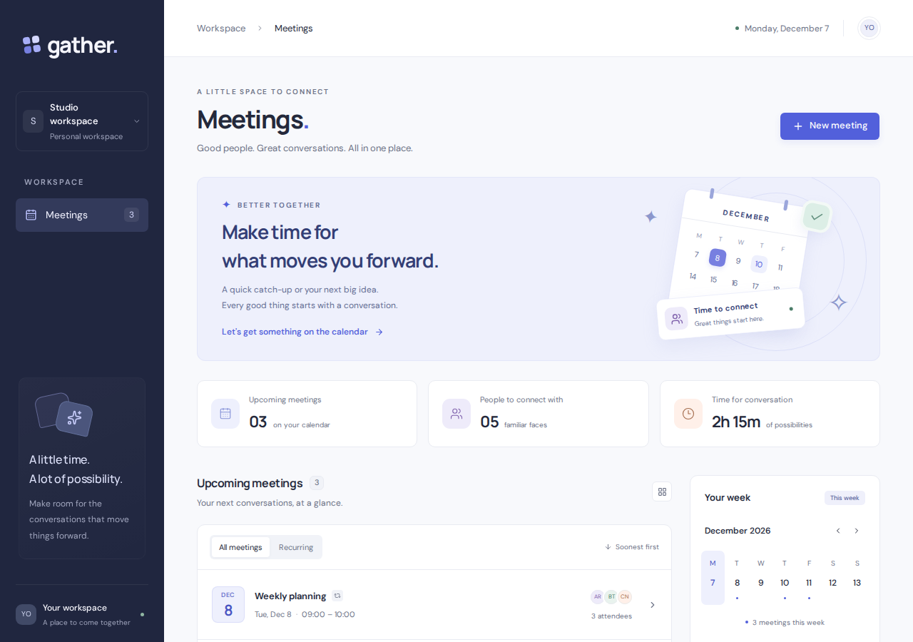

shadcn/uiCodex · gpt-6.1-sol
17/17 items19 min$1.02120 axe fails
Runs
16 runs: 4 tasks × 2 libraries × 2 models, each built single-shot from the same prompt. Open one to use the app it produced.
A modal for scheduling a meeting: attendee search with chips, a date picker, time and duration selects, repeat options, validation, discard confirmation and undo.
A triage inbox for 200 issues: tabs, search, filters, sorting, bulk actions, row and context menus with submenus, an issue drawer and a command palette.
A virtualised 10,000 × 26 grid: keyboard navigation, range selection by keyboard and mouse, editing, copy and paste, and saving.
A node editor for agent flows: pan and zoom, dragging and snapping, connecting ports, inserting steps, a properties panel, undo, autosave and a test run.